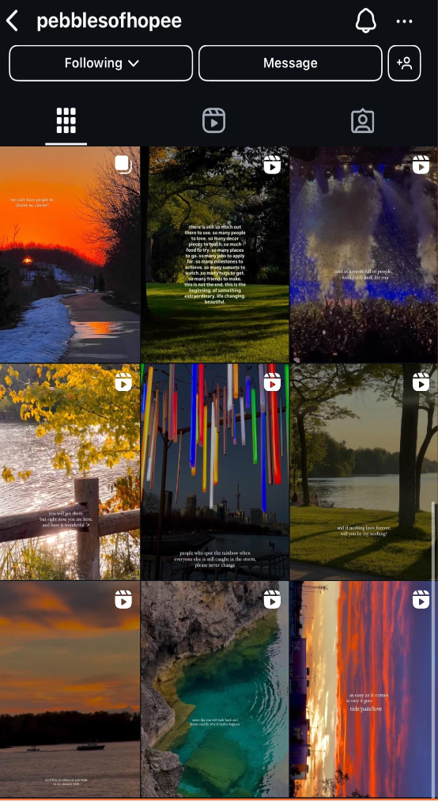
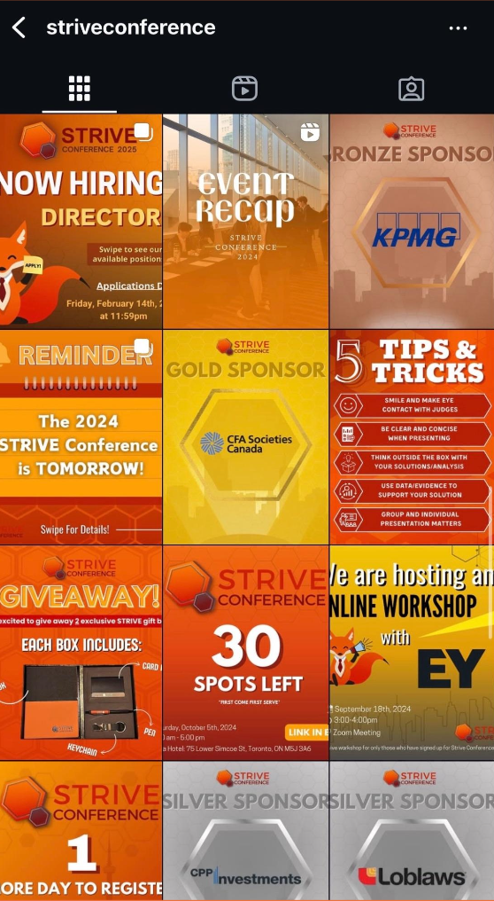
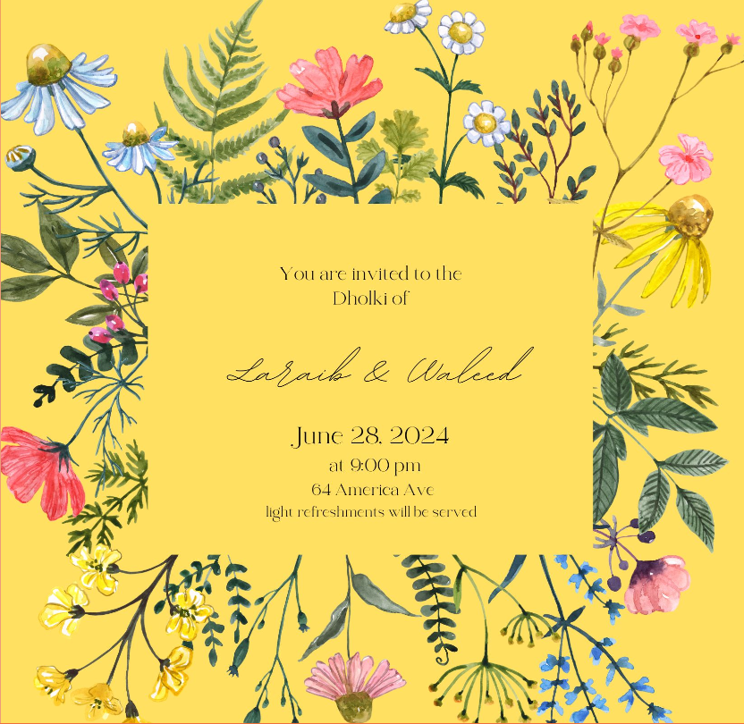
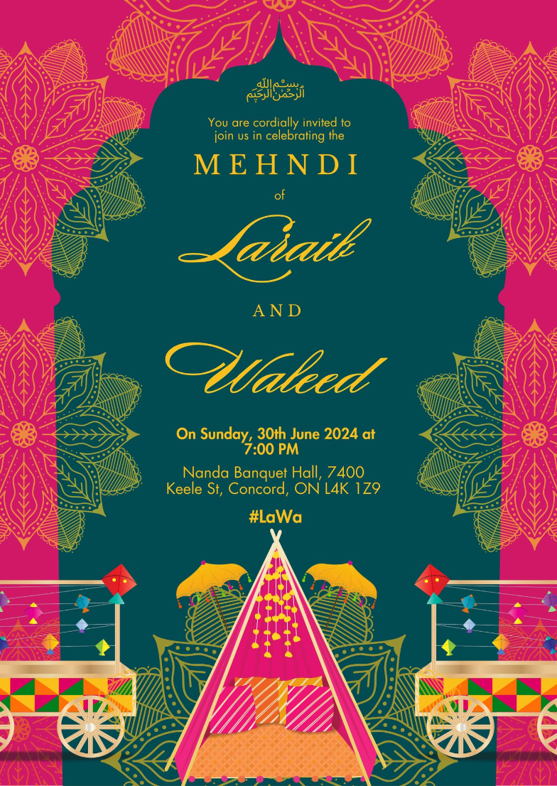

Portfolio Highlights
📸 Instagram Projects
Campaigns and social content crafted to connect communities and elevate brand voice.



💌 Wedding Card Designs
Customized, heartfelt designs infusing personality, tradition, and celebration through visuals.

